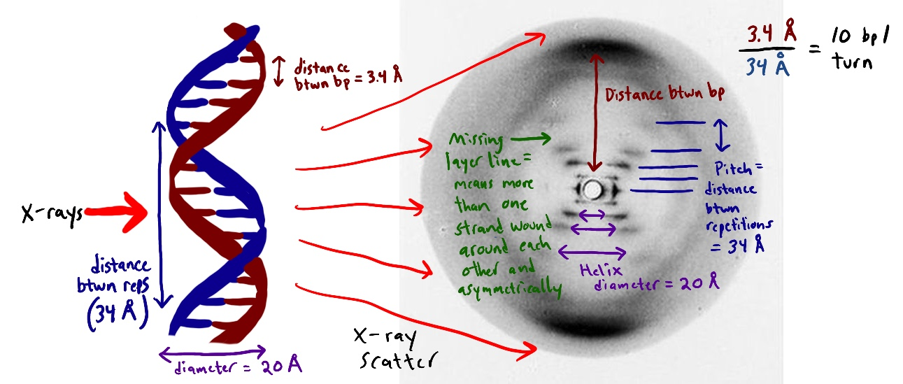

The Invisible World
Welcome, Explorer. Before 1895, the internal world of matter was a complete mystery. Scientists could only speculate about how atoms were organized.
The Mission: Mapping Nature
Everything around you is built from trillions of tiny "LEGO bricks" called Atoms. But they are so small that no normal microscope can ever see them. X-ray crystallography is the superpower that finally let us look inside.
Polymorphism: The Power of Shape
Why is a diamond the hardest material while graphite is so soft you can write with it? Both are made of 100% pure Carbon. The secret lies in their Polymorphism.
X-rays reveal that in a Diamond, atoms form a rigid 3D pyramid lattice, making it ultra-strong. In Graphite, atoms form flat, stackable sheets that slide over each other easily. The geometry defines the reality.


Precision Medicine & Global Impact
Knowing these 3D shapes is how we survive today. Through Precision Medicine, by mapping the exact 3D shape of a virus protein (its "locks"), scientists can design perfectly fitting chemical "keys" (drugs and vaccines).
This technique is our primary weapon against diseases like COVID-19 and Cancer. We design solutions based on the map of the invisible.
Explore History →History & Legends
The Timeline of Discovery
The journey to see the invisible was paved by accidental genius and mathematical brilliance.
- 1895 - Wilhelm Röntgen: Working in a dark lab with cathode rays, he discovered an "invisible light" by accident. He called it "X" because it was an unknown variable. He famously captured "The Hand of Bertha," the first clinical X-ray. It took 15 minutes of radiation, and upon seeing her bones, she cried: "I have seen my death."
- 1912 - Max von Laue: He proved that crystals act as geometric diffraction gratings, finally proving that atoms exist in organized grids.
- 1913 - The Bragg Legacy: William and Lawrence Bragg simplified the math, linking bounce angles directly to atomic distance. Lawrence won the Nobel Prize at just 25 years old.


1952 - Rosalind Franklin
She captured the legendary Photo 51. The specific "X" shape in that diffraction pattern was the mathematical signature of a spiral or helix. This single X-ray proved the structure of DNA and changed Biology forever.
How the Math works →The Technical Engine
The 3 Steps of the Mathematical Engine
How do we turn a pattern of dots into a 3D map? We use three critical mathematical steps.
Step 1: The Signal Finder (Bragg's Law)
This formula identifies Constructive Interference—when light waves hit atoms and grow larger in perfect sync.
Here, 'd' represents the vertical distance between the flat atomic planes of the crystal.
Step 2: The Spatial Map (Miller Indices)
Once we have the distances, we need coordinates. We use h, k, l as 3D coordinates to define the "Unit Cell" or the basic box of the crystal.
This tells us how tightly packed the atoms are within their geometric grid.
Step 3a: Triangulation (Law of Sines)
If the crystal isn't a perfect cube, we use this to calculate missing lengths using the angles recorded by the detector.
Step 3b: The Atomic GPS (Law of Cosines)
This calculates absolute distances in complex, tilted, or non-90° lattices where standard geometry fails.
🔬 Reflection: Prediction vs. Atomic Reality
🧠 Objective
Compare your findings with your initial prediction: How does the atomic reality align with or differ from your prior conceptualization?
Based on your initial prediction, how does the actual atomic representation differ from what you imagined? Using the diffraction data and mathematical results obtained, justify why the structure is organized this way.
The Explorer's Dictionary
Tiny blocks of the universe.
💡 ELI-11: LEGO bricks too small to see.
Invisible light.
💡 ELI-11: A camera that sees through skin.
Light bending.
💡 ELI-11: Squeezing light through a crack.
Atomic grid.
💡 ELI-11: Tidy stack of LEGOs.
The math ruler for atoms. \( n\lambda = 2d \sin(\theta) \).
Master of Light. Brilliance behind DNA photo.
DNA shadow signature. Proven life is a helix.
Waves meeting.
💡 ELI-11: Ripples getting bigger or vanishing.
Shape shifting atoms. Graphite vs Diamond.
Step size of light waves.
Finding distances via angles.
Finding lengths in complex shapes.